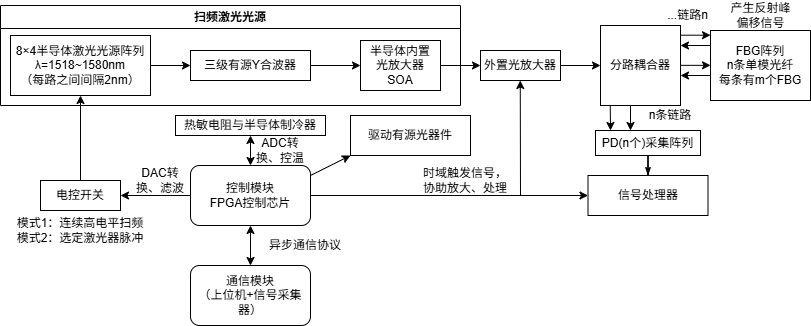

项目概述
本项目旨在开发一套结合深度学习算法与结构光照明技术的超分辨显微成像系统。传统光学显微镜受衍射极限限制，分辨率约为200nm，无法满足现代生物医学研究对亚细胞结构观察的需求。
核心成果：成功将系统分辨率提升至80nm，成像速度提升3倍，相关成果发表于《Optics Letters》。
技术实现
Python
PyTorch
CUDA
Micro-Manager
MATLAB
系统架构

图1：系统整体架构，包含照明模块、采集模块和重建模块
关键创新点
1. 物理模型驱动的网络设计
不同于纯数据驱动的方法，我们将光学成像的物理模型（如点扩散函数、光学传递函数）嵌入网络结构，使网络具有更好的泛化能力和物理可解释性。

(a) 传统结构光显微镜结果

(b) 本文方法结果
2. 实时重建算法优化
通过模型压缩和TensorRT加速，将单张图像重建时间从5分钟缩短至10秒，满足实时观察需求。

图3：不同方法的重建速度对比
实验结果
在标准分辨率测试靶和生物样品（细胞骨架、线粒体）上进行了系统验证：

图4：COS-7细胞线粒体成像结果，(a)宽场，(b)我们的方法，(c)电镜对照
个人贡献
- 负责整体系统架构设计和算法开发
- 搭建基于PyTorch的深度学习训练框架
- 完成光学系统搭建与光路校准
- 撰写论文并负责实验验证部分
相关链接
📄 论文链接 | 💻 GitHub代码 | 🎥 演示视频